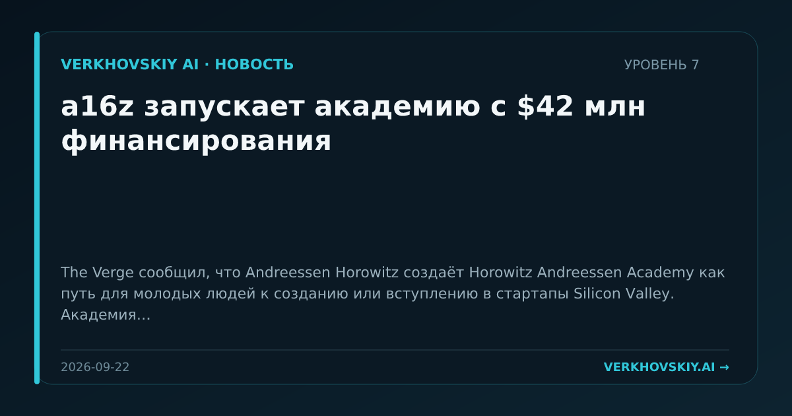

a16z запускает академию с $42 млн финансирования
The Verge сообщил, что Andreessen Horowitz создаёт Horowitz Andreessen Academy как путь для молодых людей к созданию или вступлению в стартапы Silicon Valley. Академия запускается с 10 партнёрами, включая Anduril, Anthropic, Coinbase, Google, Meta, NVIDIA, OpenAI, Palantir, Replit и Stripe, а финансирование во главе с a16z составляет $42 млн. Почему это важно: Венчурная фирма превращает образование в механизм раннего отбора и распределения кадров по технологическим экосистемам. Это меняет границу между университетской подготовкой, акселератором и корпоративным наймом.